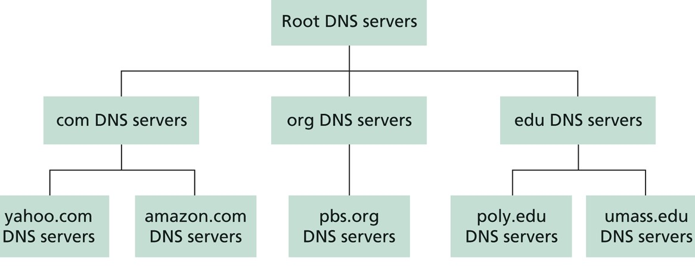

Os servidores DNS possuem bancos de dados da forma (Type, Name, Value, TTL), conhecidos como registros de recursos (RRs). Type define o tipo de consulta que será feita ao servidor, Name corresponde ao domínio, Value ao respectivo endereço IP e, TTL, o tempo que o registro será mantido no cache do servidor.(Kurose, 2016) Nenhum servidor possui registros de todos os domínios na Internet, pois o sistema funciona de forma hierarquica e distribuída, de modo que seja escalável nas infraestruturas de redes, além de possibilitar um funcionamento contínuo da rede mesmo que alguns servidores DNS deixem de funcionar.

Figura 1 - Retirado de "Redes de Computadores: Uma abordagem 'top-down'" Kurose & Ross (2016)
Na Figura 1 está representada a estrutura hierarquica do DNS. Os servidores Root possuem registros dos servidores Top Domain Level (Lista dos servidores raíz).
Os servidores TLD, por sua vez, possuem registros dos servidores autoritativos de domínios .com, .br, .edu, .net, e etc. (Lista de servidores TLD).
Além destes, existem os servidores DNS locais, normalmente pertencentes a uma ISP (Internet Service Provider). Estes, em geral, fornecem endereços de outros servidores próximos. As consultas aos registros dos servidores DNS podem ser feitas de duas formas, iterativas, como representado na figura abaixo

Figura 2 - Retirado de "Redes de Computadores: Uma abordagem 'top-down'" Kurose & Ross (2016)
Ou de forma recursiva.
Figura 3 - Disponível em: https://userpages.umbc.edu/~dgorin1/451/OSI7/dcomm/dnsrecurs1.gif
{kind=link}
O cabeçalho das requisições e respostas DNS tem o seguinte formato:
A seção de cabeçalho é formada pelos primeiros 12 bytes. O campo "indetificação" é um número de 16 bits que identifica a consulta. Esse número é copiado para a mensagem de resposta, permitindo combinar respostas recebidas com consultas enviadas. No campo de flags existem:
Flag de Consulta
0 para consulta, 1 para resposta.
Flag de autoridade
1 para respostas de servidores autoritativos.
Flag de recursão
1 quando um cliente (hospedeiro ou servidor DNS) deseja que um servidor DNS atue de forma recursiva quando não possuir o registro.
Igualmente, um campo de recursão disponível está presente na resposta caso o servidor DNS possua suporte a tal procedimento.
No cabeçalho há também quatro campos que indicam o número de ocorrências dos quatro tipos de seção de dados seguintes. A seção de pergunta contém informações sobre a consulta, como um campo com o nome que está sendo consultado e um campo de tipo com o tipo da pergunta, por exemplo, um endereço IP associado a um nome de domínio (Type A) ou um servidor de correio para um nome de domínio (Type MX). Além destes, existem as consultas Type NS, que buscam endereços IP (Value) de servidores DNS autoritativos para o domínio contido em Name, e as consultas Type CNAME, afim de descobrir os nomes canônicos para apelidos de hospedeiros. Uma resposta pode retornar vários RRs, já que um nome de hospedeiro pode ter diversos endereços IP, por exemplo, para servidores Web replicados.(Kurose, 2016) A seção de autoridade contém registros de servidores autoritativos. A seção adicional contém outros registros úteis, como um registro de recurso com o nome canônico de um servidor de correio em uma consulta MX. A seção adicional conterá um registro Type A que fornece o endereço IP para o nome canônico do servidor de correio. Para que os registros entrem no banco de dados do DNS é preciso registrar o nome de domínio com uma das entidades registradoras credenciadas pela Internet Corporation for Assigned Names and Numbers (ICANN), que verificarão a exclusividade do nome. Uma lista completa dessas entidades está disponível em: http://www.internic.net.